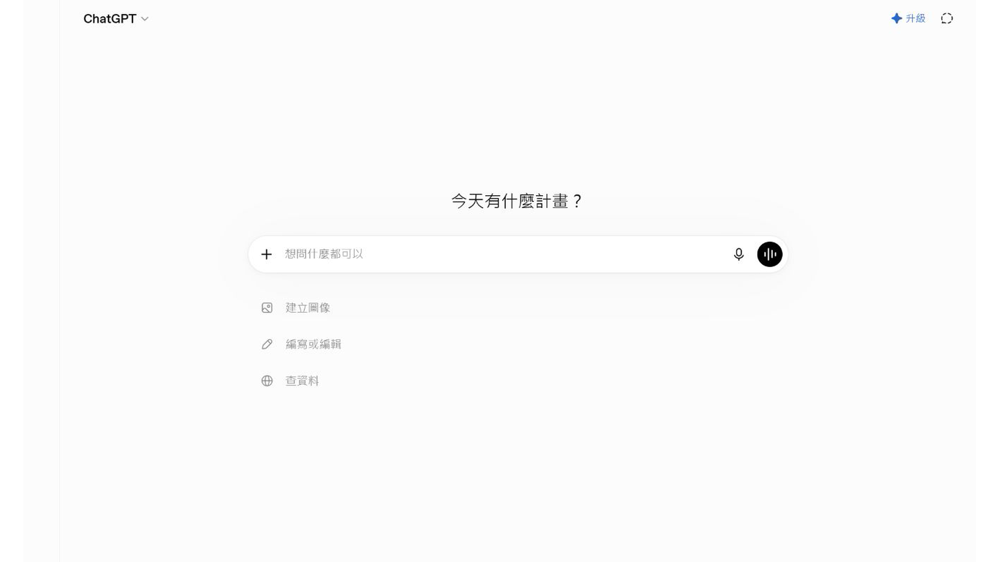
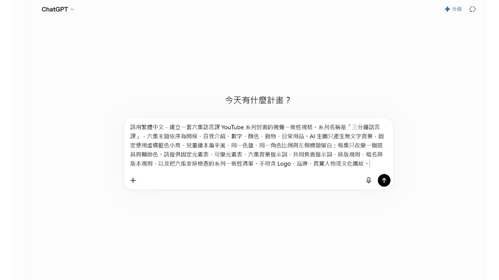
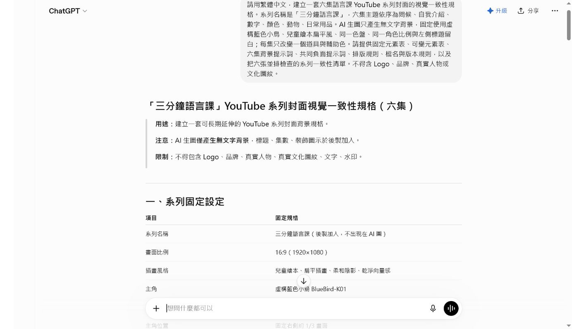

EP038 講義：把草稿變成乾淨教材插圖
開場：草稿不用漂亮，但要說得出教學意思
老師常常不是沒有想法，而是想法還很粗：兩個孩子在門口打招呼、一組學生在分組、阿桃拿著圖卡提醒大家。這些草稿就算只是幾個字，也可以變成教材插圖。
這一集要做的，是把粗略想法整理成一段清楚提示詞，讓 AI 畫出能放進學習單的乾淨插圖。
今天做完會拿到什麼
你會完成：
- 一張草稿整理表。
- 一段完整生圖提示文字。
- 一張可以放進學習單的插圖草稿。
成果不需要像藝術展作品。它只要能幫學生理解活動，就很有價值。
先準備
準備一個粗略想法就可以。例如：
我想要一張兩個孩子在教室門口打招呼的圖。接著先分出三件事：
| 要素 | 示例 |
|---|---|
| 主體 | 兩位學生 |
| 場景 | 教室門口 |
| 動作 | 揮手打招呼 |
還不確定的文化內容、詞句、服飾，先不要硬補。
跟著做
- 寫下原始草稿想法。
- 把人物、場景、動作、物件分開列出來。
- 決定插圖要放在哪裡，例如學習單或簡報。
- 寫出學生看圖後要做的事。
- 把不確定的內容先留白，不讓 AI 自己補。
- 組成完整提示文字。
- 生成後放進學習單版面看一次。
可複製提示文字
請把下面的教材草稿整理成一張乾淨的教材插圖。
草稿想法：
兩位國小學生在教室門口遇見彼此，正在揮手打招呼。
圖片用途：
放在國小族語課學習單，讓學生看圖後進行簡短口說練習。
畫面內容：
明亮的教室門口，兩位學生面向彼此，一位揮手，另一位微笑回應。背景簡單，有教室門、窗戶和書包。
限制：
- 圖中不要放任何文字。
- 不要出現真實校名、Logo、水印或學生個資。
- 不要自行加入未提供的文化服飾、圖紋或族語文字。
- 畫面清楚，適合放在學習單。圖片出來後怎麼看
把圖放進學習單草稿，而不是只在生圖工具裡看。
| 檢查 | 看什麼 |
|---|---|
| 主體 | 學生一眼看得出誰在做什麼 |
| 空間 | 旁邊放得下題目或詞彙 |
| 用途 | 圖片真的能引出口說任務 |
| 乾淨度 | 沒有亂字、Logo、水印 |
如果圖片縮小後看不懂，就不是好教材圖。先改構圖，不要急著加更多細節。
課堂怎麼用
這張插圖可以放在學習單第一題。老師先問學生：「他們在做什麼？」再帶入問候句或替換練習。
一張圖只支援一個任務就好。任務清楚，學生比較敢開口。
如果不順，先這樣調
如果 AI 畫偏了，把主體放到提示詞前面。
如果畫面太像海報，補上：
worksheet illustration, simple layout, clear subject如果它加了不確定文化元素，下一版改成一般教室服裝和低風險場景。
本集操作畫面
以下畫面是本集實際操作紀錄，請依序對照前面的步驟。




完成前看一眼
- 草稿原本的教學意思有保留下來。
- 圖片能放進學習單。
- 圖中沒有文字或水印。
- 不確定內容沒有讓 AI 自己補。
- 圖片和提示詞有一起保存。